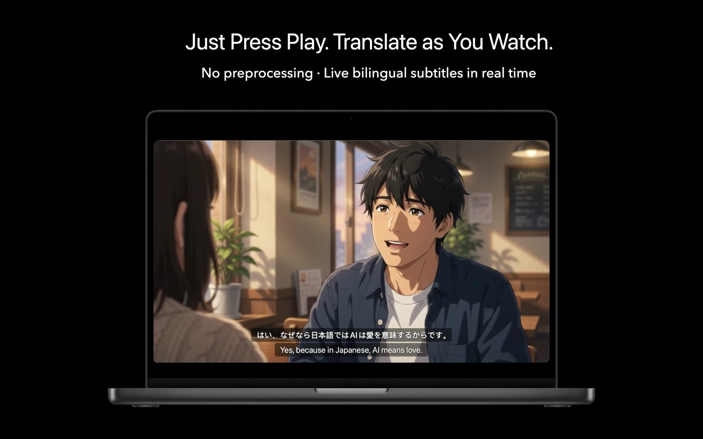
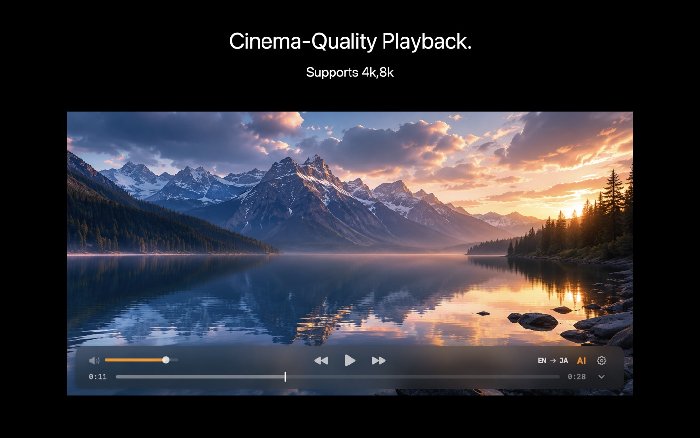
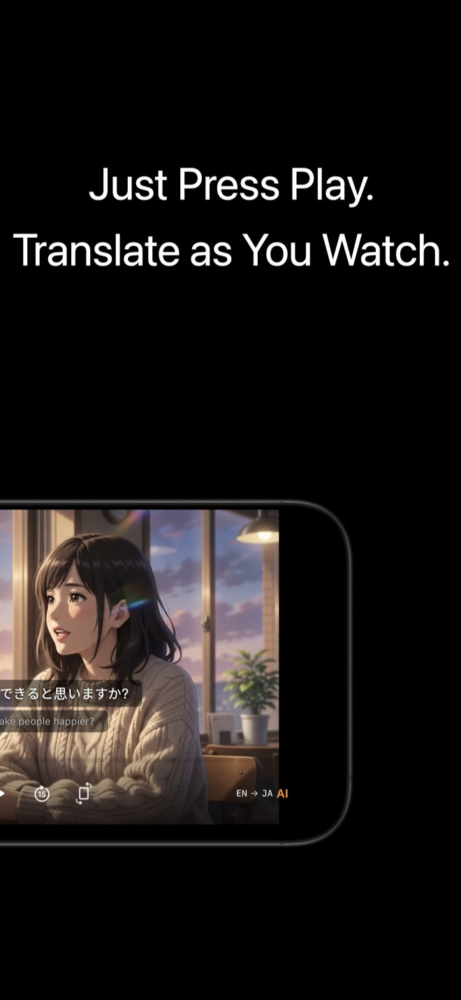

Real-time AI subtitles, translated as you watch.
Point KenjaPlayer at any video — a movie with no subtitles, a lecture in another language, an episode from your Jellyfin library — and it listens, transcribes and translates live. Everything happens on your device, so subtitles appear with no upload delay and no privacy trade-off.

Built for the speed of speech
Most tools make you wait for a file to finish processing. KenjaPlayer schedules recognition ahead of the playhead, commits text at natural sentence boundaries, and translates fast enough to keep up with live dialogue.
- Look-ahead scheduling — audio is analyzed before the playhead arrives, so subtitles appear on time.
- Sentence-boundary commits — no word-salad; lines land as complete, readable sentences.
- Context-aware batches — when there's headroom, lines are re-translated in groups for better accuracy.
- Custom vocabulary — feed it the movie's title and names so it gets the nouns right.

From anywhere, to your language
Recognize speech in 20+ languages and translate into 25+ targets, displayed as clean dual subtitles: the original line, and yours. Watch raw anime, undubbed films, foreign lectures — no external subtitle files required.

Plays well with real subtitles too
AI subtitles and traditional subtitle files live side by side. Load the SRT you already have, or let the AI fill the gap when no file exists.
- SRT / VTT support — external subtitle files load and display alongside AI tracks.
- Timing nudge — shift subtitles earlier or later until they land perfectly.
- Style that stays out of the way — clear, readable overlays that never fight the picture.
- Works offline — recognition and translation need no network at all.
Subtitles, questions
How accurate is live translation?
Which Apple devices support AI subtitles?
Can I export the AI subtitles?
Watch anything.
Understand everything.
Free download with a generous AI allowance — subtitles included.
NO SUBSCRIPTION · NO ACCOUNT · NO TRACKING